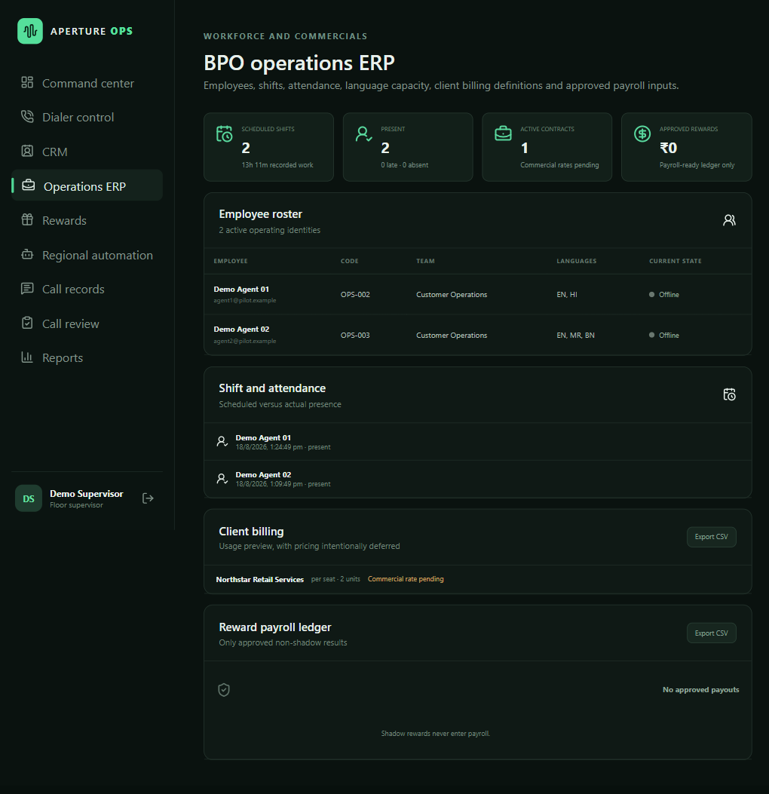
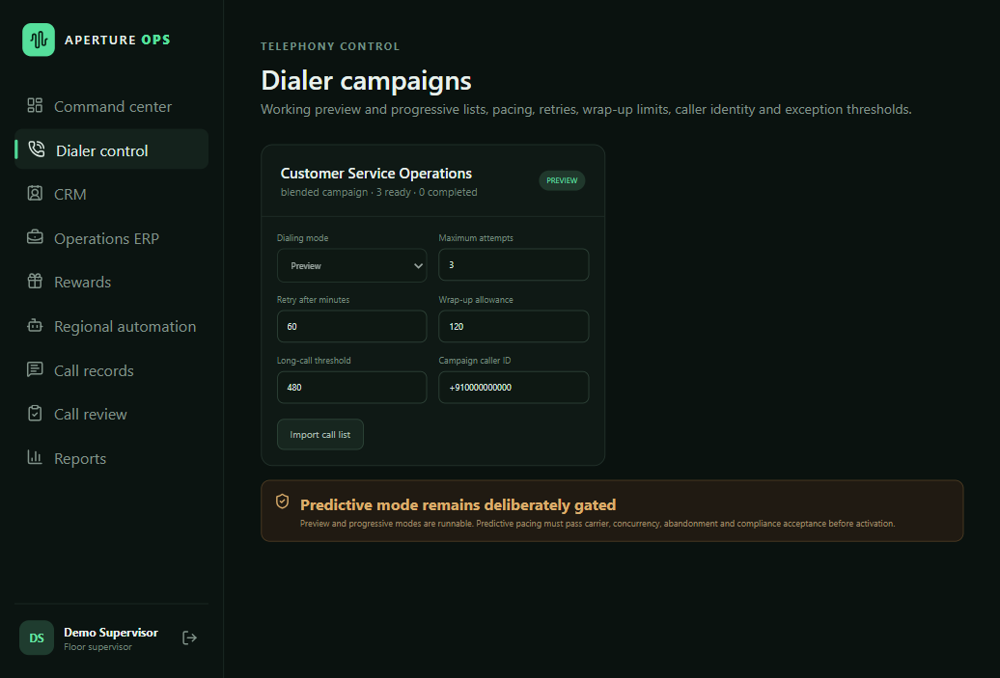

Calling and call records
Work with calling workflows, recordings, transcripts, and the associated call history.
Aperture Ops connects calling workflows with call records, quality review, supervisor operations, ERP, and reporting for BPO teams.
Aperture Ops has one paying BPO customer deployment, live since 15 September 2026, with seven starter seats.
Teams can manage calling, review call records and transcripts, track quality, and bring operations data into supervisor and reporting views.
Work with calling workflows, recordings, transcripts, and the associated call history.
AI-assisted quality checks connect outcomes to transcript evidence. Reviewers can inspect and correct results.
Bring workforce, shift, attendance, and operational information into supervisor workflows.
Review operational activity and reporting from the same workspace used by the team.


Aperture has operated since 15 June 2026 and was founded by Atharva Singh and Sanidhya Shishodia.
We build and deploy AI automation directly with businesses, then develop reusable products from recurring workflows. Aperture serves seven paying B2B customers across its product and implementation work; the Ops deployment above is one of those customers.